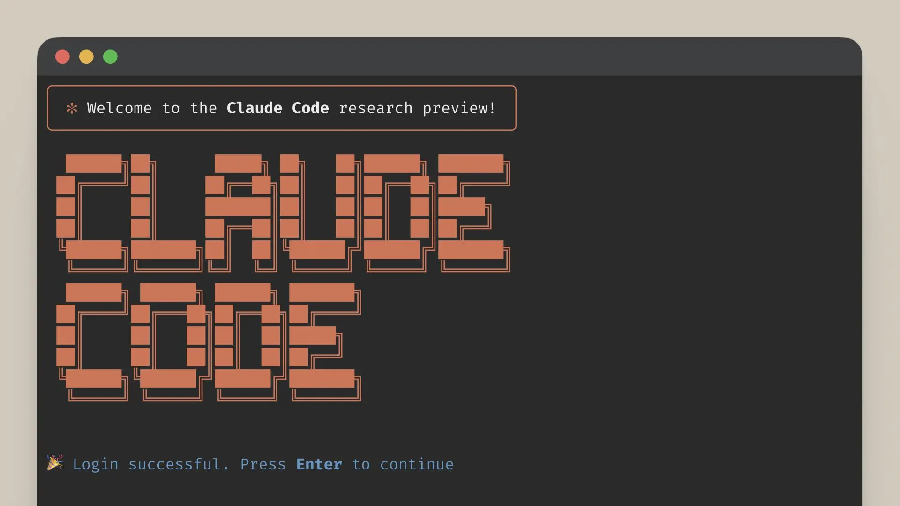
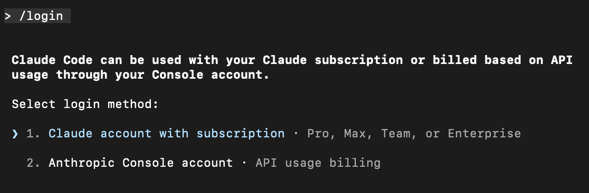
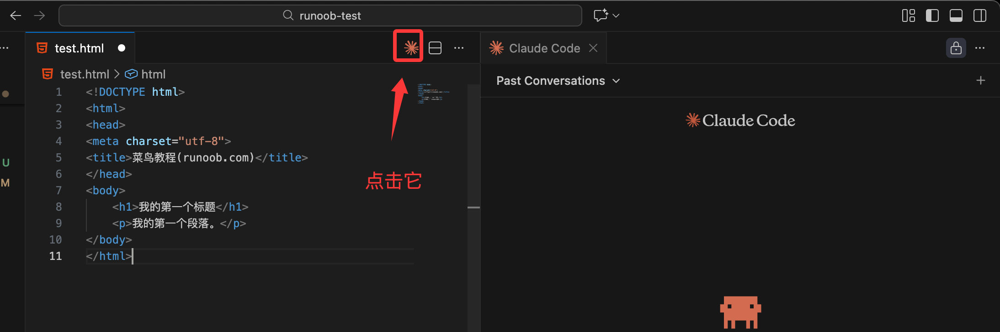

Claude Code入門チュートリアル
Claude CodeはAnthropic公式のCLIレベルのエージェントツールです。
Claude Codeの位置づけはチャットではなく、ローカルコードリポジトリ内で高権限かつコンテキストを認識したエンジニアリングタスクを実行することです。
Claude CodeはAgentであり、Chatではありません。
詳細なチュートリアルは以下を参照：https://www.runoob.com/claude-code/claude-code-tutorial.html
コア機能：
- プロジェクトディレクトリ全体を直接読み取る
- 実際のコード構造を理解する
- 複数ファイルの修正を実行する
- 対話で喜ばせるのではなく、指示に厳密に従う

インストールと設定
MacOS/Linux:
curl -fsSL https://claude.ai/install.sh | bash
Homebrew (MacOS):
brew install --cask claude-code
Windows:
irm https://claude.ai/install.ps1 | iex
NPM:
npmを使用してインストール お使いのシステムにNode.js（v18以上）がインストールされていることを確認してください。
npm install -g @anthropic-ai/claude-code
次に、作成したプロジェクトディレクトリに入り、Claude Codeの使用を開始できます：
cd your-project claude
アカウントにログイン
claudeコマンドでインタラクティブセッションを起動する際には、ログインが必要です：
claude # 首次使用时会提示您登录 /login # 按照提示使用您的账户登录

Anthropicアカウントを正常に使用できる場合は、そのまま使用を開始できます。国内（中国）のアカウントがない場合は、DeepSeekやGLMなどを使用できます。
DeepSeekをClaude Codeに接続
Claude Codeをインストールした後、ターミナルで以下の環境変数を設定します：
export ANTHROPIC_BASE_URL=https://api.deepseek.com/anthropic export ANTHROPIC_AUTH_TOKEN=<你的 DeepSeek API Key> export ANTHROPIC_MODEL=deepseek-v4-pro[1m] export ANTHROPIC_DEFAULT_OPUS_MODEL=deepseek-v4-pro[1m] export ANTHROPIC_DEFAULT_SONNET_MODEL=deepseek-v4-pro[1m] export ANTHROPIC_DEFAULT_HAIKU_MODEL=deepseek-v4-flash export CLAUDE_CODE_SUBAGENT_MODEL=deepseek-v4-flash export CLAUDE_CODE_EFFORT_LEVEL=max
パラメータの説明：
CLAUDE_CODE_EFFORT_LEVEL：思考深度。low / medium / max から選択可能ANTHROPIC_MODEL：deepseek-v4-pro[1m] モデルを使用するよう指定CLAUDE_CODE_DISABLE_NONESSENTIAL_TRAFFIC=1：不要なトラフィックを無効化
その後、プロジェクトディレクトリに入り、claudeコマンドを実行すると使用を開始できます。
cd my-project claude

参考ドキュメント：https://api-docs.deepseek.com/zh-cn/guides/anthropic_api
阿里百炼をClaude Codeに接続
阿里云百炼の通義千問シリーズモデルはAnthropic API互換インターフェースをサポートしています。以下のパラメータを変更することで、Claude Codeで通義千問シリーズモデルを呼び出すことができます。
ANTHROPIC_API_KEY（または ANTHROPIC_AUTH_TOKEN）：百炼のAPI Keyに置き換えます。申請先：https://bailian.console.aliyun.com/cn-beijing/?tab=model#/api-key。
-
ANTHROPIC_BASE_URL：百炼の互換エンドポイントアドレスに置き換えますhttps://dashscope.aliyuncs.com/apps/anthropic。
-
モデル名：百炼がサポートするモデル名（例：qwen3-max、qwen3-coder-plusなど）に置き換えます
macOS/Linux：
設定ファイルを作成して開く~/.claude/settings.json。
~ユーザーのホームディレクトリを表します。もし.claudeディレクトリが存在しない場合は、先に作成する必要があります。ターミナルで以下を実行してくださいmkdir -p ~/.claude で作成します。
設定ファイルを編集します：
vim ~/.claude/settings.json
YOUR_API_KEYを専用API Keyに置き換えます。
{
"env": {
"ANTHROPIC_AUTH_TOKEN": "YOUR_API_KEY",
"ANTHROPIC_BASE_URL": "https://dashscope.aliyuncs.com/apps/anthropic",
"ANTHROPIC_MODEL": "qwen3-coder-plus"
}
}
新しいターミナルを開き直して、環境変数の設定を有効にします。
Windows：
CMDで以下のコマンドを実行して、環境変数を設定します：
setx ANTHROPIC_AUTH_TOKEN "YOUR_API_KEY" setx ANTHROPIC_BASE_URL "https://dashscope.aliyuncs.com/apps/anthropic" setx ANTHROPIC_MODEL "qwen3-coder-plus"
YOUR_API_KEYをプラン専用のAPI Keyに置き換えます。
新しいCMDウィンドウを開き、以下のコマンドを実行して環境変数が有効かどうかを確認します。
echo %ANTHROPIC_AUTH_TOKEN% echo %ANTHROPIC_BASE_URL% echo %ANTHROPIC_MODEL%
PowerShellで以下のコマンドを実行して、環境変数を設定します：
# 用套餐专属 API Key 替换 YOUR_API_KEY
[Environment]::SetEnvironmentVariable("ANTHROPIC_AUTH_TOKEN", "YOUR_API_KEY", [EnvironmentVariableTarget]::User)
[Environment]::SetEnvironmentVariable("ANTHROPIC_BASE_URL", "https://dashscope.aliyuncs.com/apps/anthropic", [EnvironmentVariableTarget]::User)
[Environment]::SetEnvironmentVariable("ANTHROPIC_MODEL", "qwen3-coder-plus", [EnvironmentVariableTarget]::User)
新しいPowerShellウィンドウを開き、以下のコマンドを実行して環境変数が有効かどうかを確認します。
echo $env:ANTHROPIC_AUTH_TOKEN echo $env:ANTHROPIC_BASE_URL echo $env:ANTHROPIC_MODEL
Claude Codeで通義千問シリーズモデルを接続する
対話中に実行します：/model <モデル名>コマンドでモデルを切り替えます。
/model qwen3-coder-plus
プロジェクトのルートディレクトリに作成することもできます.claude/settings.jsonファイルを作成し、モデル設定情報を書き込むことで永続的に設定できます。

{
"env": {
"ANTHROPIC_MODEL": "qwen3-coder-plus",
"ANTHROPIC_SMALL_FAST_MODEL": "qwen-flash"
}
}
Claudeを起動すると、設定情報を確認できます：

智譜大モデルをClaude Codeに接続
この部分では、~/.claude/settings.jsonファイルを使用して大モデルを設定します。開始前に公式プラットフォームでAPIキーを取得する必要があります：GLM Coding Plan。
Claude Codeの設定ファイル ~/.claude/settings.json を編集または新規作成し、その中のenvフィールドを追加または変更します
# 注意替换里面的your_zhipu_api_key 为您上一步获取到的 API Key
{
"env": {
"ANTHROPIC_AUTH_TOKEN": "your_zhipu_api_key",
"ANTHROPIC_BASE_URL": "https://open.bigmodel.cn/api/anthropic",
"API_TIMEOUT_MS": "3000000",
"CLAUDE_CODE_DISABLE_NONESSENTIAL_TRAFFIC": 1
}
}claudeを実行してClaude Codeを起動し、以下を入力します：/statusモデルの状態を確認します：

そうでない場合は、以下を入力して/configモデルを切り替えることができます。

大モデルが多くなると設定が面倒になります。サードパーティ製ツールのCC Switchを使用すると、これらの人気ツールのAPI設定を簡単に管理できます：https://github.com/farion1231/cc-switch/Windows / macOS / Linuxすべてに対応しています。
各プラットフォームのインストールパッケージのダウンロード先：https://github.com/farion1231/cc-switch/releases。


VS CodeでClaude Codeをインストール
Claude Codeのコマンドラインモデルを使用したくない場合は、VS CodeエディターにClaude Codeをインストールできます。
VS Codeを開き、拡張機能マーケットに入り、検索します：Claude Codeインストール：

インストールが完了したら、右上のClaude Codeアイコンをクリックすると、Claude Codeページに入れます：

これでアカウントをお持ちの方は /login でログインできます：

また、ダイアログで /config と入力して設定に入り、Disable Login Prompt 設定にチェックを入れるとログインページを無効化できます：

関連コマンドリファレンス
Claude Code組み込みコマンド一覧
| コマンド | 説明 |
|---|---|
/add-dir |
追加の作業ディレクトリを追加 |
/agents |
専用AIサブエージェントを管理 |
/bashes |
バックグラウンドタスクを一覧表示して管理 |
/bug |
バグを報告（会話をAnthropicに送信） |
/clear |
会話履歴をクリア |
/compact [指令] |
会話を圧縮。必要に応じて重要な指示を追加可能 |
/config |
設定画面を開く（設定タブ） |
/context |
現在のコンテキスト使用状況をカラーグリッドで可視化 |
/cost |
トークン使用統計を表示 |
/doctor |
Claude Codeのインストール健全性をチェック |
/exit |
REPLを終了 |
/export [文件名] |
現在の会話をファイルまたはクリップボードにエクスポート |
/help |
使用ヘルプを取得し、利用可能なすべてのコマンドを表示 |
/hooks |
ツールイベントのフック設定を管理 |
/ide |
IDE統合を管理し、ステータスを表示 |
/init |
CLAUDE.mdガイドを使用してプロジェクトを初期化 |
/install-github-app |
リポジトリにClaude GitHub Actionsを設定 |
/login |
Anthropicアカウントを切り替え |
/logout |
Anthropicアカウントからログアウト |
/mcp |
MCPサーバー接続とOAuth認証を管理 |
/memory |
CLAUDE.mdメモリファイルを編集 |
/model |
AIモデルを選択または変更 |
/output-style [样式] |
出力スタイルを直接設定するか、選択メニューから選択 |
/permissions |
権限を表示または更新 |
/plugin |
Claude Codeプラグインを管理 |
/pr-comments |
PRコメントを表示 |
/privacy-settings |
プライバシー設定を表示および更新 |
/release-notes |
リリースノートを表示 |
/resume |
会話を復元 |
/review |
コードレビューを依頼 |
/rewind |
会話および/またはコードをロールバック |
/sandbox |
ファイルシステムとネットワーク分離を備えたサンドボックスbashツールを有効化 |
/security-review |
現在のブランチの保留中の変更を安全にレビュー |
/status |
設定画面を開く（ステータスタブ）。バージョン、モデル、アカウント、接続状態を表示 |
/statusline |
Claude Codeのステータス行UIを設定 |
/terminal-setup |
Shift+Enterの改行キーバインドをインストール（iTerm2とVSCodeのみ） |
/todos |
現在のToDoリストを表示 |
/usage |
プランの使用制限とレート制限ステータスを表示（サブスクリプションプランのみ） |
/vim |
vimモードに入り、挿入モードとコマンドモードを切り替え |
カスタムコマンドタイプ
| コマンドタイプ | 場所 | 説明 |
|---|---|---|
| プロジェクトコマンド | .claude/commands/ |
リポジトリに保存され、チームと共有 |
| 個人コマンド | ~/.claude/commands/ |
すべてのプロジェクトで利用可能 |
| プラグインコマンド | プラグインのcommands/目次 |
プラグインマーケットを通じて配布 |
| MCP コマンド | MCP サーバーによって提供される | 形式:/mcp__<服务器名>__<提示名> |
Shellコマンド（セッション外）
| コマンド | 説明 |
|---|---|
claude |
Claude Code のインタラクティブセッションを起動 |
claude -p "查询" |
非対話モード、結果を出力して終了 |
claude --dangerously-skip-permissions |
すべての権限チェックをスキップ（危険モード） |
claude --debug |
デバッグモードを有効化 |
claude --mcp-debug |
MCP デバッグモード |
claude mcp add |
MCP サーバーを追加 |
claude mcp list |
設定済みの MCP サーバーを一覧表示 |
claude mcp remove |
MCP サーバーを削除 |
特殊機能
カスタムコマンドのサポート:
$ARGUMENTS- すべての引数をキャプチャ$1, $2, $3...- 個別の位置引数にアクセス@ファイル名- ファイルの内容を引用!コマンド- bash コマンドを実行し、出力を含める
コマンドのフロントマター（メタデータ）:
allowed-tools- コマンドが使用できるツールのリストargument-hint- 引数のプロンプト説明description- コマンドの短い説明model- モデルの指定disable-model-invocation- SlashCommand ツールの呼び出しを防止
詳細情報は次の方法で確認できます/help利用可能なすべてのコマンドの一覧（カスタムコマンドを含む）を表示します。
関連リソース
-
Claude Code チュートリアル:https://www.runoob.com/claude-code/claude-code-tutorial.html
-
オープンソースアドレス:https://github.com/anthropics/claude-code
DeepSeek Anthropic API：https://api-docs.deepseek.com/zh-cn/guides/anthropic_api
智谱（Zhipu）大規模言語モデルの Claude Code への接続:https://docs.bigmodel.cn/cn/coding-plan/tool/claude#claude-code